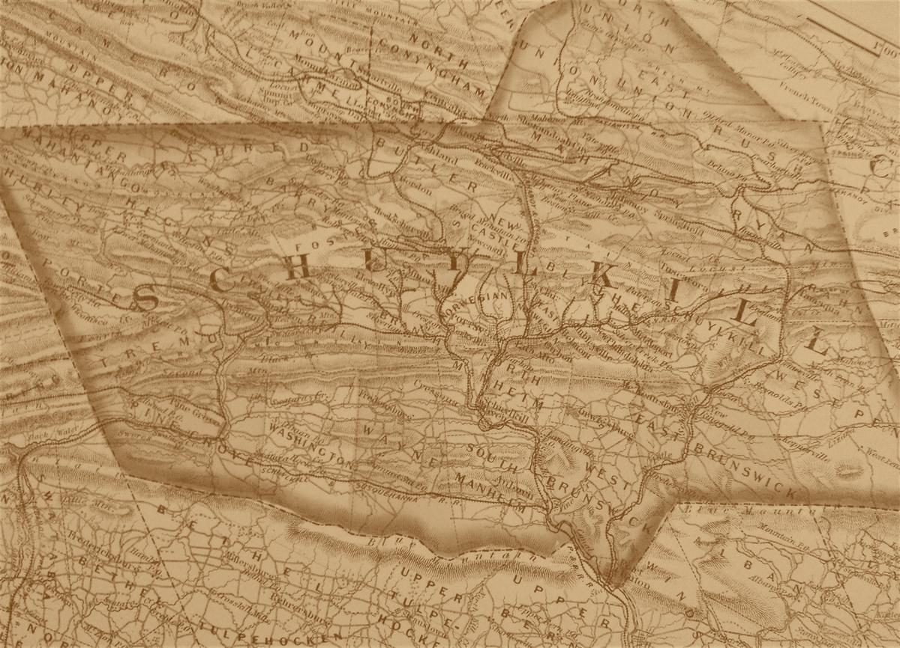
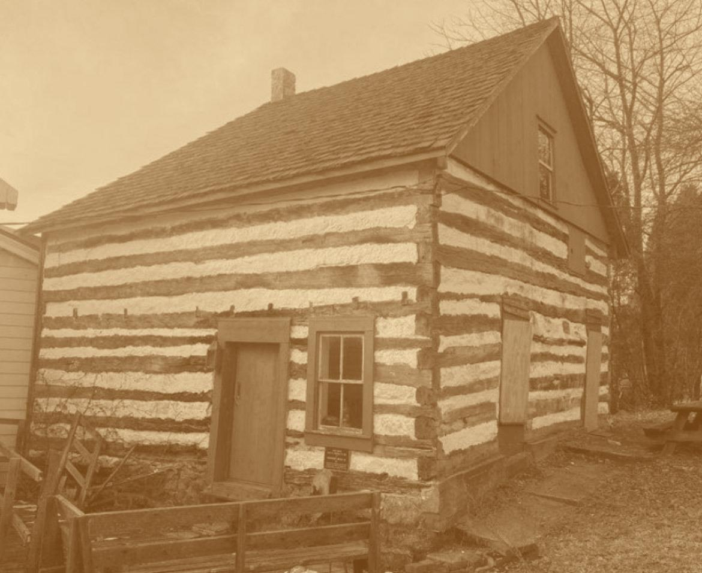
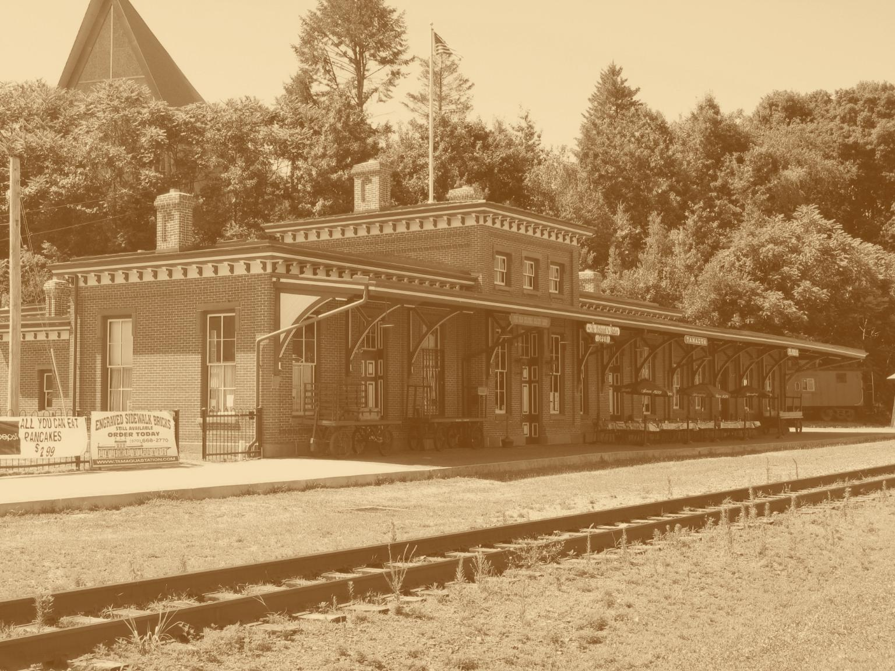
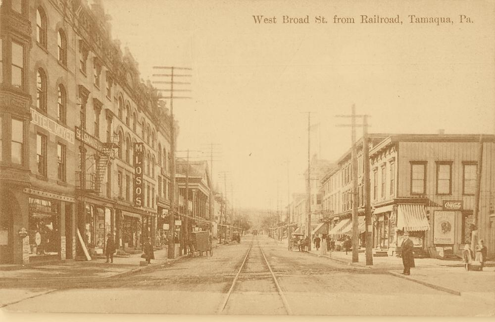

Nestled in a valley carved by the Little Schuylkill River, Tamaqua traces its roots to the Lenape people and early German settlers. As the 19th century unfolded, coal, railroads, and hard labor shaped the town's enduring identity.
In 1799, Burkhardt Moser settled in what would become Tamaqua, establishing a log home near Panther Creek. His modest homestead marked the start of what would soon become a vital hub in Pennsylvania’s coal region.
Anthracite coal brought dramatic transformation. By the early 1800s, coal operations grew rapidly, and in 1831, the Little Schuylkill Railroad connected Tamaqua to the outside world. Trestles, coal breakers, and engine sheds soon filled the valleys.
With prosperity came infrastructure — hotels, theaters, and bustling shops. Immigrants from Europe settled in close-knit neighborhoods and brought faith, food, and tradition to the hills of Schuylkill County.
